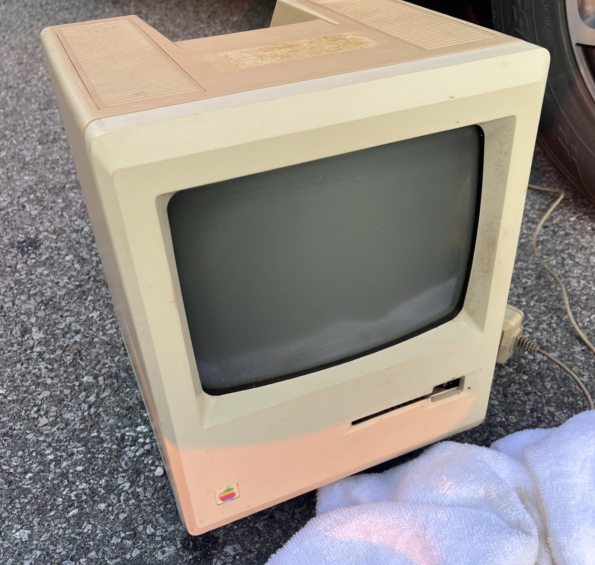
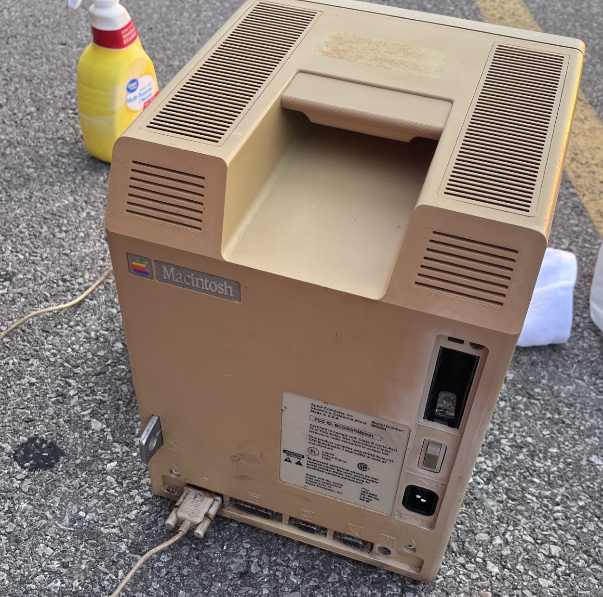
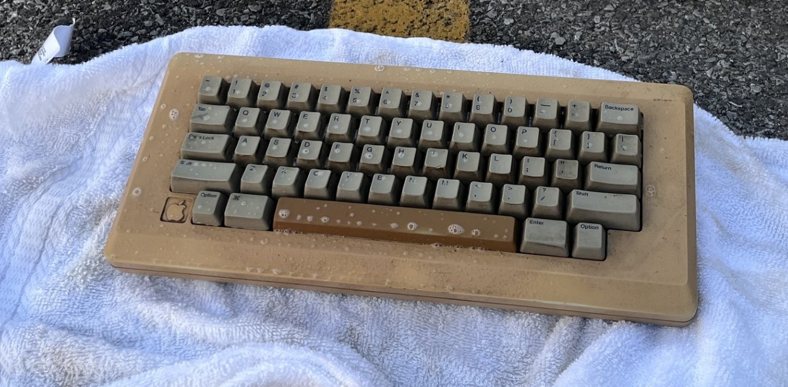
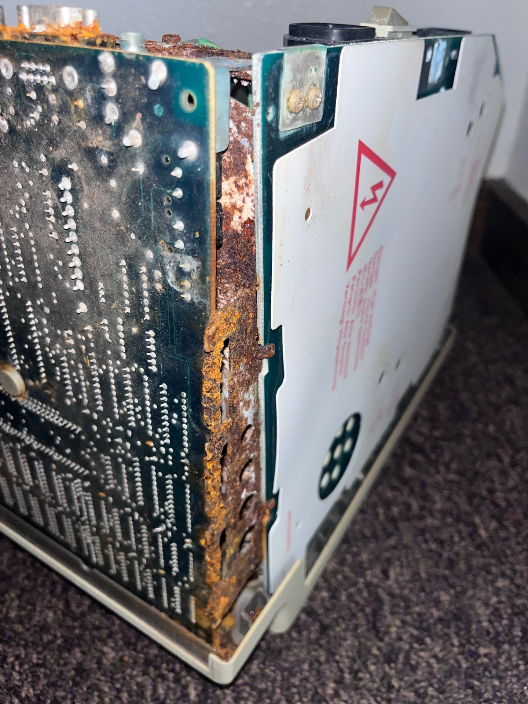
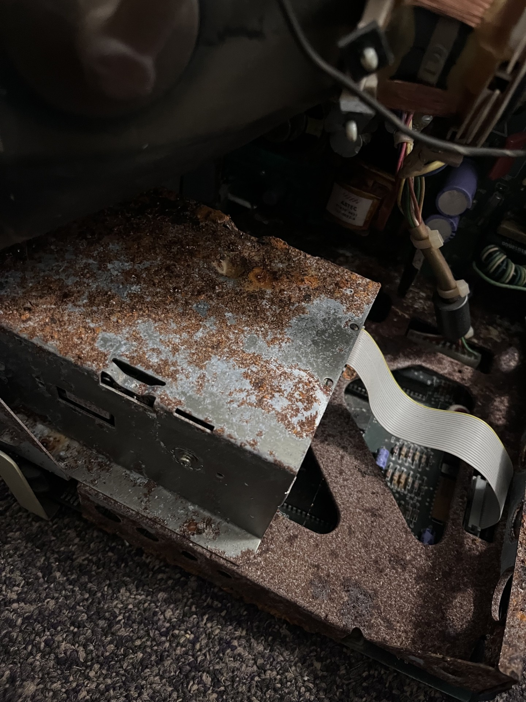
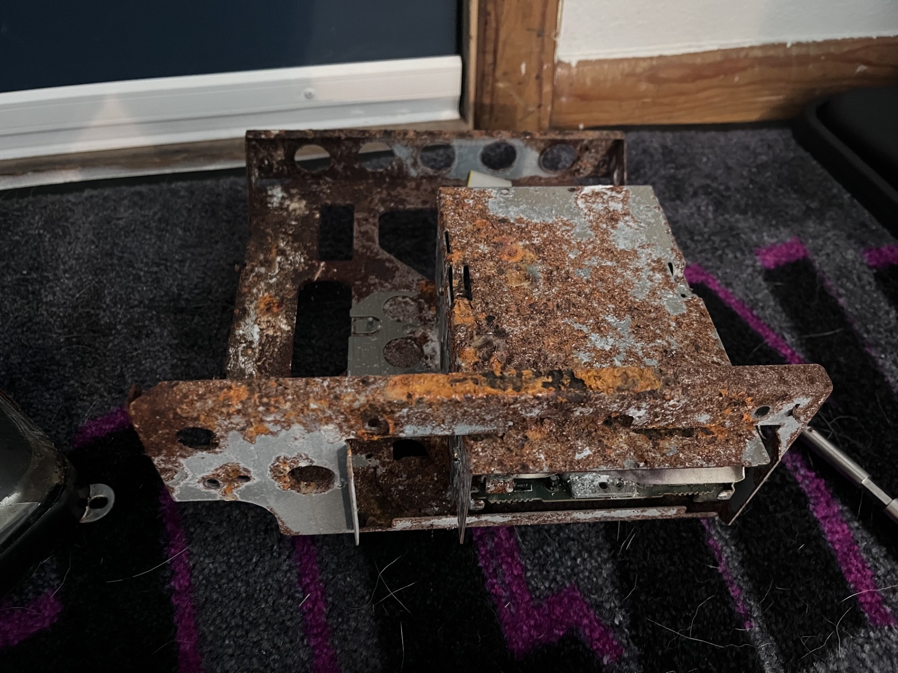
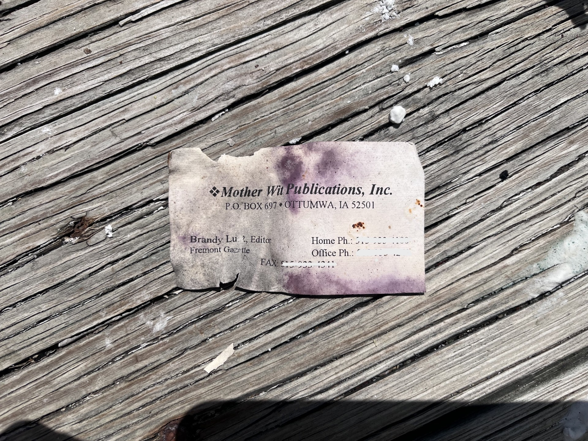
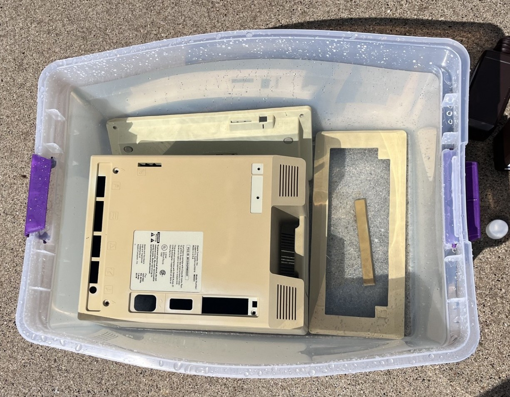
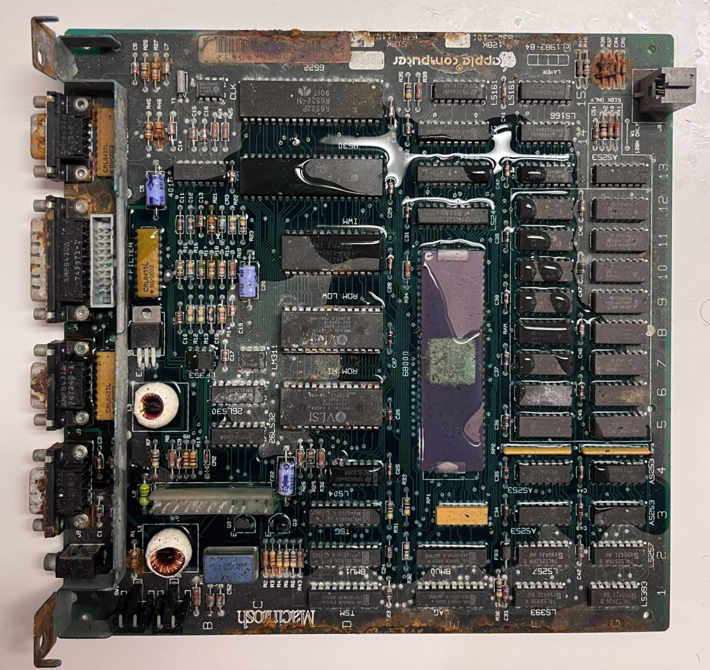
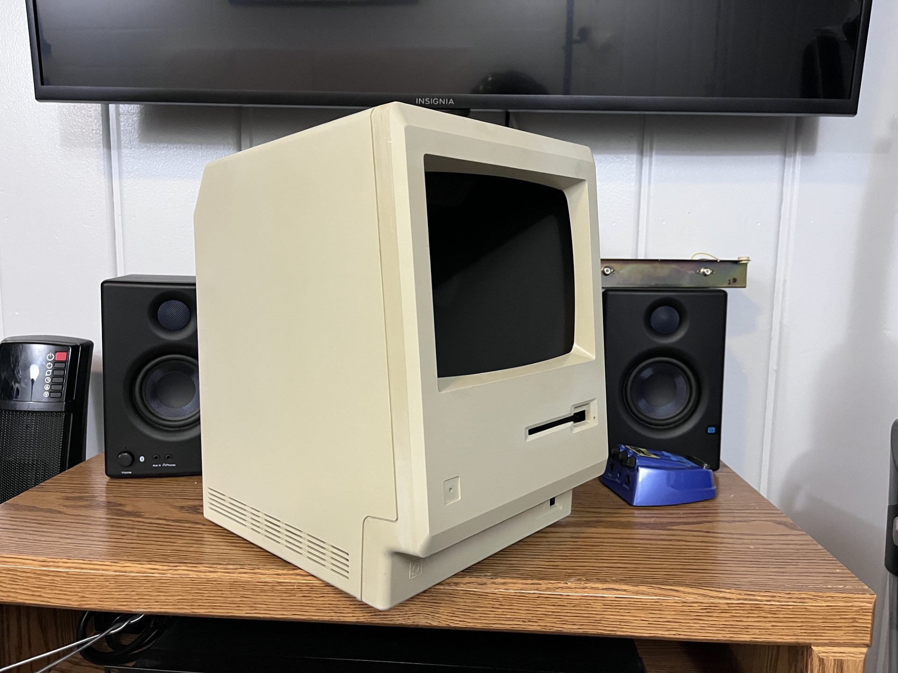

.... .. . s s s
+^""888h. ~"888h @88> :8 :8 :8
8X. ?8888X 8888f %8P u. u. .88 .88 u. u. u. .88
'888x 8888X 8888~ . u x@88k u@88c. .u :888ooo :888ooo ...ue888b x@88k u@88c. .u :888ooo
'88888 8888X "88x: .@88u us888u. ^"8888""8888" ud8888. -*8888888 -*8888888 888R Y888r ^"8888""8888" ud8888. -*8888888
`8888 8888X X88x. ''888E` .@88 "8888" 8888 888R :888'8888. 8888 8888 888R I888> 8888 888R :888'8888. 8888
`*` 8888X '88888X 888E 9888 9888 8888 888R d888 '88%" 8888 8888 888R I888> 8888 888R d888 '88%" 8888
~`...8888X "88888 888E 9888 9888 8888 888R 8888.+" 8888 8888 888R I888> 8888 888R 8888.+" 8888
x8888888X. `%8" 888E 9888 9888 8888 888R 8888L .8888Lu= .8888Lu= u8888cJ888 . 8888 888R 8888L .8888Lu=
'%"*8888888h. " 888& 9888 9888 "*88*" 8888" '8888c. .+ ^%888* ^%888* "*888*P" .@8c "*88*" 8888" '8888c. .+ ^%888*
~ 888888888!` R888" "888*""888" "" 'Y" "88888% 'Y" 'Y" 'Y" '%888" "" 'Y" "88888% 'Y"
X888^""" "" ^Y" ^Y' "YP' ^* "YP'
`88f
88

I have been on the lookout for an original Apple Macintosh for the longest time, and one finally happened to pop up on Facebook Marketplace for the low price of $70. Well, most of the Macintosh. Some of it had rusted away as you will see in these next few photos. I was told by the seller that the Macintosh was stored in an abandoned publisher's office building since 1994, and was surrounded by mold and moisture (his words, not mine). Well, I drove 40 minutes already, so I decided to accept my fate and bought the Macintosh. It came with the keyboard, external floppy drive, and the mouse.

Immediately the mouse stood out to me because it was not an actual "Macintosh" mouse, rather, it was an Apple mouse designed for the Apple II line of machines. Apparently they are compatible with Macintoshes, so it will stay. This mouse also was rusted to the mouse port on the motherboard, so I needed to get pliers to twist the screw terminals to finally get it removed from the computer.

The keyboard had yellowed, as did the rest of the computer. The space bar was the worst out of the entire set, it is made from ABS plastic, which is different from the what the rest of the keys are made from. Surpringly the Macintosh rear shell had yellowed more than the front faceplate, I am not sure why since these two pieces appear to be made of the same plastic.

This is what I initially saw when I opened the computer. The entire chasis had rusted and fused to the motherboard. I decided that the bottom chasis was beyond saving and bent the rust off to remove the motherboard. I think I might get Tetanus from this; afterall, it was stored in a moldy and moist environment most of its life. I decided to use a replacement chasis instead of reusing the original you see here and threw it out.

Here you can see the extent of the rust. It spans the entire chasis, no metal was spared. Heatsinks, CRT implosion band, any and all IC legs had corroded to varying degrees. The floppy drive bracket however seemed salvagable so I placed it in a bin of vinegar to dissolve the rust.

This is what the chasis looked like when I had everything taken apart.

Strangely, I found this inside the floppy drive. It had been inside that floppy drive for probably 30+ years.

I decided to start retrobriting these yellowed plastics, a controversial move as I understand the yellowing will return eventually and the plastic's structual integrity may worsen, but I would rather look at something that isn't a disgusting hue of yellow than to have it yellow years later. Here is what the plastics looked like after a few hours in the sun. I placed the rear housing in a plastic tub along with the keyboard shell and spacebar.
I put 6 bottles of 3% Hydrogen Peroxide into the tub and let it sit over the duration of a few days. The weather was in the mid 80's and was sunny most of the time, perfect for retrobriting. Unfortunately, the bleaching did not go as planned.

While the parts were outside getting a tan, I decided to turn my attention to the motherboard. I forgot to take a picture of the board as I had found it and only realized this after I had covered it in dish soap, so that is what you see here. I put it under the water and gave it a good bath with a toothbrush. It came out very nicely and I think it will have a chance of working again.
It is worth noting this is not an original 128k motherboard and is instead a 512k upgrade. I think it is still fairly early given the 1984 manufacture date on all the ICs, but finding this was still a bit disheartning to see since the only reason I had bought this Macintosh was to have an original Macintosh 128k.
The analog board looked like it would need some more attention. The heatsinks were all rusted, and the filter capacitor would need to be replaced. Overall, massive project that I hope to get addressed before the semester starts in a few weeks.

Well it certainly looks a bit better than before, but the whitening was not as even as I had hoped. Furthermore, the case was now slightly too white. From far away and low light conditions I suppose it looks alright, but it will be something I will have to live with for now.
I will be updating this post with more pictures once I get back to my house and finished with my internship, but for now this is where I have things. More will be posted, stay tuned.